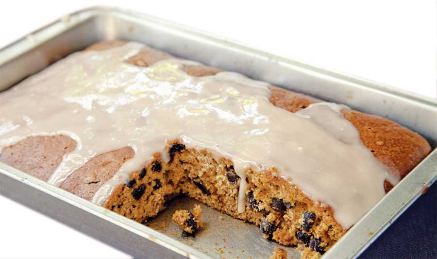

Ingredients:
1 cup boiling water
1 cup raisins
2 cups flour
1/2 tsp salt
1 tsp baking soda
1 cup sugar
1/2 cup applesauce
1 tsp ground cinnamon
1/4 tsp nutmeg
1 egg
Instructions:
Combine the boiling water and raisins in a large bowl. Allow to cool to room temperature. Preheat oven to 375 degrees. Sift together the flour, salt and baking soda. Set aside.
To the cooled raisin mixture, add the sugar, applesauce, spices and egg. Beat well. Mix in the dry ingredients. Pour into a greased 9-by-13-inch pan and bake for 20 to 25 minutes, or until a toothpick comes out clean. If desired, frost with a simple vanilla icing (recipe below). Makes 12 bars.
VANILLA ICING
Ingredients:
2/3 cup powdered sugar
1 tsp vanilla
2 tbsp milk
Instructions:
Whisk together until smooth. Spread on the cinnamon raisin bars.
|
 EMILY HELLER A drizzling of vanilla icing makes this sweet treat even sweeter. |
|
|